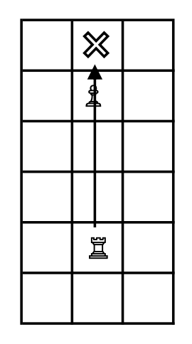
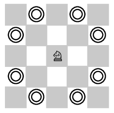
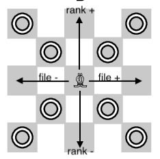

Stage 4 駒の動きを判定する
4-3 ルーク・ナイト・ビショップ・クイーンの動きを判定する
まずはルークの判定を実装します。こいつについては「正しい動きについて True を返す」作戦より「間違った動きに False を突きつける」戦法がいいでしょう。
# ROOK
elif piece == ROOK:
# invalid motion; not moving on the same file/rank
if frFILE != toFILE and frRANK != toRANK:
logger.debug('INVALID MOTION of ROOK')
return False
# else, necessary to check whether there is an obstacle in the way
タテヨコにバビューン (1 マスもバビューン) と動いていない場合、要はわずかにでもナナメに動いていれば何がなんでも False ですね。
タテなら file の値が、ヨコなら rank の値が変わりませんので、「両方とも変わってるわ」って時は遠慮なく False を突きつけてください。

お、もう終わりか
いえいえ、ここで False が突きつけられなかった場合でも、すべて True とはできません。ルークは途中にある駒を飛び越えることができませんから。
ただ、ビショップやクイーンでも同じことを考えないといけないので、この場合を判別するのは後回しにしておきましょう。ビショップやクイーンとまとめて書いた方が効率的でしょ？
~~~~~~~~~~~~~~~
今度はナイトを実装します。
# KNIGHT
elif piece == KNIGHT:
# valid motion
if (abs(toFILE - frFILE) == 1 and abs(toRANK - frRANK) == 2) or (abs(toFILE - frFILE) == 2 and abs(toRANK - frRANK) == 1):
return True
# all other motions are invalid
logger.debug('INVALID MOTION of KNIGHT')
return False
ナイトほど変な動きをする駒はありません。ほらご覧くださいよこの訳わからない動き。
これはコーディングが難しそうだと思うのも無理ありません。ですが、file と rank を考えてみるとそう難しいことでもないんですわこれが。True を返す条件は、
のいずれかであることがわかるかと思います。これ以外はすべからく False です。
~~~~~~~~~~~~~~~
ビショップはルークと同じように考えればいいでしょう。
# BISHOP
elif piece == BISHOP:
# invalid motion; not moving on the same diagonal
if abs(toFILE - frFILE) != abs(toRANK - frRANK):
logger.debug('INVALID MOTION of BISHOP')
return False
# else, necessary to check an obstacle in the way
ナナメは「file が 1 増えれば rank は 1 減る」「file が 1 減ると rank が 1 減る」などといった挙動を示すので、True を返す条件は「file の差と rank の差の絶対値 abs が等しい」と表せます。
駒を飛び越える場合の処理はルークやクイーンと一緒にあとでやりましょう。
~~~~~~~~~~~~~~~
ルークでもビショップでも許されない動きは女王様でも許されません。これを念頭にコーディングして、駒を飛び越える場合をあとで処理すれば問題ありません。
# QUEEN
elif piece == QUEEN:
# invalid motion (cf, B/R)
if frFILE != toFILE and frRANK != toRANK and abs(toFILE - frFILE) != abs(toRANK - frRANK):
logger.debug('INVALID MOTION of QUEEN')
return False
# else, necessary to check an obstacle in the way
基本的にルークとクイーンのコピペで大丈夫です。ただ、False を返すのは「ルークの動きがダメ
かつ
ビショップの動きがダメ」という形にしなければならないことを押さえておいてください。ここの論理はしっかり。